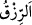
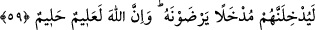

nimetleridir. Kâşifî der ki: “Allah Teâlâ onlara iyi bir rızık verir, bu cennettir. O rızkın
elde edilmesinde ne bir zahmet ve meşakkat çeker, ne rızkın yenmesiyle hastalık
meydana gelir, ne de o rızkın kesileceği korkusu olur.”
“Şüphesiz Allah, evet O, rızık verenlerin en hayırlısıdır. “ Çünkü o hesapsız rızık
verir. Halbuki O’nun verdiği rızka başkası güç yetiremez. “__WORD__ dünyevî olsun uhrevî
olsun geçerli olan atâ ve ihsandır.
Sonra Allah şöyle buyurarak onların meskenlerini beyan etti:
59. Allah onları, memnun kalacakları bir yere sokacaktır. Elbette Allah, çok iyi
bilendir, halîmdir.
“Allah onları, memnun kalacakları bir yere” cennete “sokacaktır. Çünkü onlar orada
hiçbir gözün görmediğini görecek, hiçbir kulağın işitmediğini işitecek ve hiçbir beşerin
kalbinden geçmeyeni duyup hissedecekler.
“Elbette Allah,” her şeyin durumunu “çok iyi bilendir, halîmdir.” Sonsuz kudret sâhibi
olmasına rağmen düşmanları cezalandırmakta acele etmez.
Rivâyet edilir ki İbrâhim (a.s.) bir isyânkârı günah işlerken gördü. Ona bedduâ etti ve
“Allah’ım onu helâk et.” dedi. Sonra ikincisini, üçüncüsünü ve dördüncüsünü gördü.
Onlara da bedduâ etti. Allah Teâlâ: “Ey İbrâhim, isyan eden her kulu helâk etseydik,
helâk olmadık pek az kimse kalırdı. Fakat bir kimse günah işleyince biz ona süre tanırız.
Tevbe edecek olursa kabul ederiz. İstiğfar ederse azabı ondan geciktiririz. Biz onun
mülk ve hükümranlığımızdan çıkacak durumda olmadığını biliriz.
Kâşifî der ki: “Rivâyet edildiğine göre sahâbeden bazıları Hz. Peygamber’e: “Ey
Allah’ın Rasûlü! Din kardeşlerimizin bir kısmıyla cihâda gidiyoruz, onlar şehîd
oluyorlar ve ilâhî ikramlara, atıyyelere nâil oluyorlar. Eğer biz ölüp de şehîd olmazsak
hâlimiz ne olacak?” diye sordular. Bunun üzerine bu âyet nazil oldu.” Yâni, âyette
Allah’ın vaadi konusunda öldürülen ile kendisi ölen eşit tutulmuştur. Çünkü ikisinin de
maksadı aynıdır. O da Allah’a yaklaşma ve dîne yardım etmektir.
Bunun benzeri Şeyh-i Ekber (k.s.)’un el-Fütûhâtü’l-Mekkiye’de söylediği şu sözdür:
“Namaz başlayacak olduğu halde müezzin geçmiş zaman siygası ile “Namaz başladı”
demesi ancak mescide gelip namazı bekleyen, yolda namaza gelmekte olan, namaz için
abdest almakta olan veya abdeste başlamamış fakat abdest almak ve bu abdestle namaz
kılmak niyetinde olan kullarına Allah’tan bir müjdedir. Kim namazı edadan önce bu
vaziyetlerden birisinde ölecek olursa, bütün bu hallerde namazı kılmış gibidir. Her ne
kadar o namazı edâ etmemiş olsa da onun için namazı kılan kimsenin ecri vardır. Bunun
kesin olarak gerçekleştiğini ifâde için geçmiş zaman siygası ile gelmiştir. Namazı bilfiil
edâ eden için zaten maksad hâsıl olmuştur. Bir hadiste “Biriniz namazı beklediği sürece